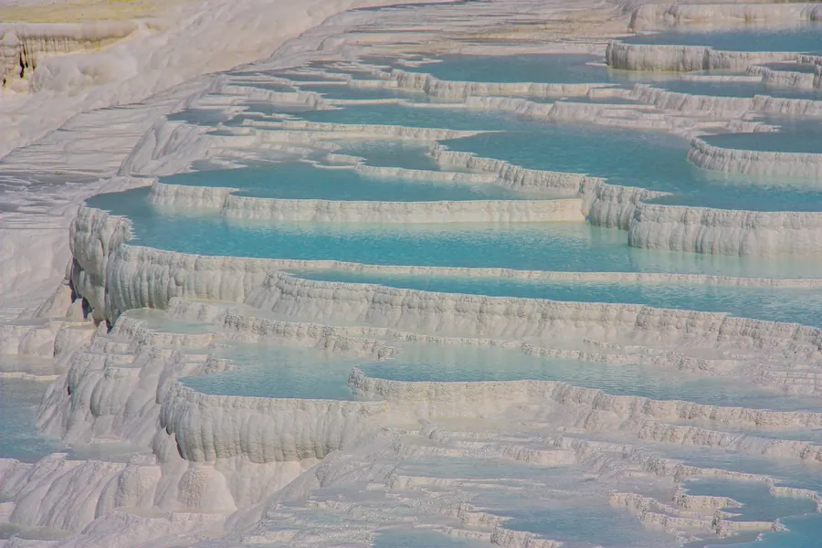
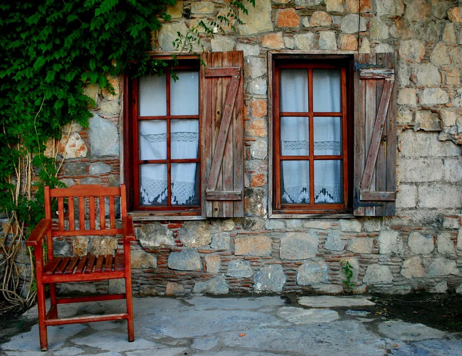
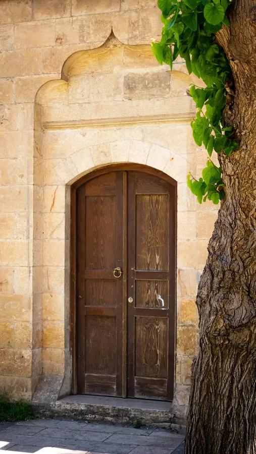
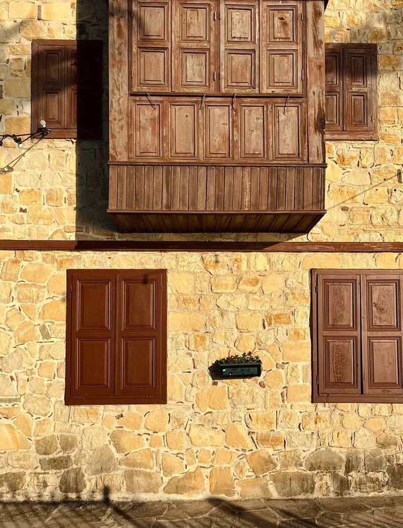
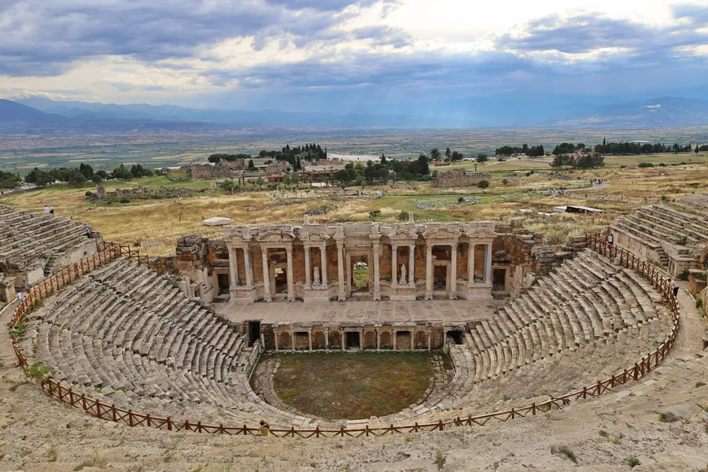
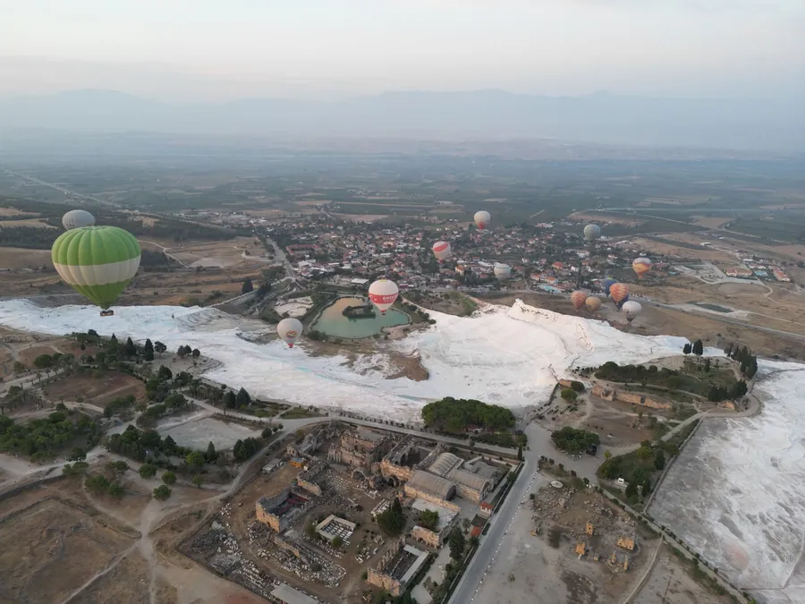

Travertenler
Kalker teraslar ve turkuaz havuzlar; gün batımında renkleri değişir.

Tikir House, Pamukkale'de küçük bir pansiyon. Tarihleri yazın, doğrudan bize ulaşın; cevabı aracısız, doğrudan sizden alın.

Büyük bir otelin kalabalığı yerine, küçük bir pansiyonun yakınlığı. Tikir House, Pamukkale'de Daşlı Sokak'ta, dokuz numarada.


Pamukkale travertenleri ile Hierapolis antik kenti birlikte UNESCO Dünya Mirası Listesi'nde. Konaklamanızı bu rotaya göre kurabilirsiniz.
Kalker teraslar ve turkuaz havuzlar; gün batımında renkleri değişir.

Antik kentin tiyatrosu ve taş döşeli yolları, teraslarla aynı alanda.

Pamukkale üzerinde sıcak hava balonu turları yapılır.
